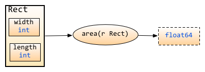
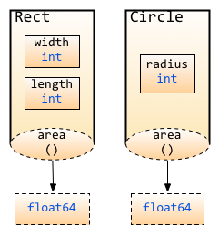

2.5 面向对象
前面两章我们介绍了函数和struct，那你是否想过函数当作struct的字段一样来处理呢？今天我们就讲解一下函数的另一种形态，带有接收者的函数，我们称为method
method
现在假设有这么一个场景，你定义了一个struct叫做长方形，你现在想要计算他的面积，那么按照我们一般的思路应该会用下面的方式来实现
package main
import "fmt"
type Rectangle struct {
width, height float64
}
func area(r Rectangle) float64 {
return r.width*r.height
}
func main() {
r1 := Rectangle{12, 2}
r2 := Rectangle{9, 4}
fmt.Println("Area of r1 is: ", area(r1))
fmt.Println("Area of r2 is: ", area(r2))
}
这段代码可以计算出来长方形的面积，但是area()不是作为Rectangle的方法实现的（类似面向对象里面的方法），而是将Rectangle的对象（如r1,r2）作为参数传入函数计算面积的。
这样实现当然没有问题咯，但是当需要增加圆形、正方形、五边形甚至其它多边形的时候，你想计算他们的面积的时候怎么办啊？那就只能增加新的函数咯，但是函数名你就必须要跟着换了，变成area_rectangle, area_circle, area_triangle...
像下图所表示的那样， 椭圆代表函数, 而这些函数并不从属于struct(或者以面向对象的术语来说，并不属于class)，他们是单独存在于struct外围，而非在概念上属于某个struct的。

图2.8 方法和struct的关系图
很显然，这样的实现并不优雅，并且从概念上来说"面积"是"形状"的一个属性，它是属于这个特定的形状的，就像长方形的长和宽一样。
基于上面的原因所以就有了method的概念，method是附属在一个给定的类型上的，他的语法和函数的声明语法几乎一样，只是在func后面增加了一个receiver(也就是method所依从的主体)。
用上面提到的形状的例子来说，method area() 是依赖于某个形状(比如说Rectangle)来发生作用的。Rectangle.area()的发出者是Rectangle， area()是属于Rectangle的方法，而非一个外围函数。
更具体地说，Rectangle存在字段length 和 width, 同时存在方法area(), 这些字段和方法都属于Rectangle。
用Rob Pike的话来说就是：
"A method is a function with an implicit first argument, called a receiver."
method的语法如下：
func (r ReceiverType) funcName(parameters) (results)
下面我们用最开始的例子用method来实现：
package main
import (
"fmt"
"math"
)
type Rectangle struct {
width, height float64
}
type Circle struct {
radius float64
}
func (r Rectangle) area() float64 {
return r.width*r.height
}
func (c Circle) area() float64 {
return c.radius * c.radius * math.Pi
}
func main() {
r1 := Rectangle{12, 2}
r2 := Rectangle{9, 4}
c1 := Circle{10}
c2 := Circle{25}
fmt.Println("Area of r1 is: ", r1.area())
fmt.Println("Area of r2 is: ", r2.area())
fmt.Println("Area of c1 is: ", c1.area())
fmt.Println("Area of c2 is: ", c2.area())
}
在使用method的时候重要注意几点
- 虽然method的名字一模一样，但是如果接收者不一样，那么method就不一样
- method里面可以访问接收者的字段
- 调用method通过
.访问，就像struct里面访问字段一样
图示如下:

图2.9 不同struct的method不同
在上例，method area() 分别属于Rectangle和Circle， 于是他们的 Receiver 就变成了Rectangle 和 Circle, 或者说，这个area()方法 是由 Rectangle/Circle 发出的。
值得说明的一点是，图示中method用虚线标出，意思是此处方法的Receiver是以值传递，而非引用传递，是的，Receiver还可以是指针, 两者的差别在于, 指针作为Receiver会对实例对象的内容发生操作,而普通类型作为Receiver仅仅是以副本作为操作对象,并不对原实例对象发生操作。后文对此会有详细论述。
那是不是method只能作用在struct上面呢？当然不是咯，他可以定义在任何你自定义的类型、内置类型、struct等各种类型上面。这里你是不是有点迷糊了，什么叫自定义类型，自定义类型不就是struct嘛，不是这样的哦，struct只是自定义类型里面一种比较特殊的类型而已，还有其他自定义类型申明，可以通过如下这样的申明来实现。
type typeName typeLiteral
请看下面这个申明自定义类型的代码
type ages int
type money float32
type months map[string]int
m := months {
"January":31,
"February":28,
...
"December":31,
}
看到了吗？简单的很吧，这样你就可以在自己的代码里面定义有意义的类型了，实际上只是一个定义了一个别名,有点类似于c中的typedef，例如上面ages替代了int
好了，让我们回到method
你可以在任何的自定义类型中定义任意多的method，接下来让我们看一个复杂一点的例子
package main
import "fmt"
const(
WHITE = iota
BLACK
BLUE
RED
YELLOW
)
type Color byte
type Box struct {
width, height, depth float64
color Color
}
type BoxList []Box //a slice of boxes
func (b Box) Volume() float64 {
return b.width * b.height * b.depth
}
func (b *Box) SetColor(c Color) {
b.color = c
}
func (bl BoxList) BiggestColor() Color {
v := 0.00
k := Color(WHITE)
for _, b := range bl {
if bv := b.Volume(); bv > v {
v = bv
k = b.color
}
}
return k
}
func (bl BoxList) PaintItBlack() {
for i, _ := range bl {
bl[i].SetColor(BLACK)
}
}
func (c Color) String() string {
strings := []string {"WHITE", "BLACK", "BLUE", "RED", "YELLOW"}
return strings[c]
}
func main() {
boxes := BoxList {
Box{4, 4, 4, RED},
Box{10, 10, 1, YELLOW},
Box{1, 1, 20, BLACK},
Box{10, 10, 1, BLUE},
Box{10, 30, 1, WHITE},
Box{20, 20, 20, YELLOW},
}
fmt.Printf("We have %d boxes in our set\n", len(boxes))
fmt.Println("The volume of the first one is", boxes[0].Volume(), "cm³")
fmt.Println("The color of the last one is",boxes[len(boxes)-1].color.String())
fmt.Println("The biggest one is", boxes.BiggestColor().String())
fmt.Println("Let's paint them all black")
boxes.PaintItBlack()
fmt.Println("The color of the second one is", boxes[1].color.String())
fmt.Println("Obviously, now, the biggest one is", boxes.BiggestColor().String())
}
上面的代码通过const定义了一些常量，然后定义了一些自定义类型
- Color作为byte的别名
- 定义了一个struct:Box，含有三个长宽高字段和一个颜色属性
- 定义了一个slice:BoxList，含有Box
然后以上面的自定义类型为接收者定义了一些method
- Volume()定义了接收者为Box，返回Box的容量
- SetColor(c Color)，把Box的颜色改为c
- BiggestColor()定在在BoxList上面，返回list里面容量最大的颜色
- PaintItBlack()把BoxList里面所有Box的颜色全部变成黑色
- String()定义在Color上面，返回Color的具体颜色(字符串格式)
上面的代码通过文字描述出来之后是不是很简单？我们一般解决问题都是通过问题的描述，去写相应的代码实现。
指针作为receiver
现在让我们回过头来看看SetColor这个method，它的receiver是一个指向Box的指针，是的，你可以使用*Box。想想为啥要使用指针而不是Box本身呢？
我们定义SetColor的真正目的是想改变这个Box的颜色，如果不传Box的指针，那么SetColor接受的其实是Box的一个copy，也就是说method内对于颜色值的修改，其实只作用于Box的copy，而不是真正的Box。所以我们需要传入指针。
这里可以把receiver当作method的第一个参数来看，然后结合前面函数讲解的传值和传引用就不难理解
这里你也许会问了那SetColor函数里面应该这样定义*b.Color=c,而不是b.Color=c,因为我们需要读取到指针相应的值。
你是对的，其实Go里面这两种方式都是正确的，当你用指针去访问相应的字段时(虽然指针没有任何的字段)，Go知道你要通过指针去获取这个值，看到了吧，Go的设计是不是越来越吸引你了。
也许细心的读者会问这样的问题，PaintItBlack里面调用SetColor的时候是不是应该写成(&bl[i]).SetColor(BLACK)，因为SetColor的receiver是*Box，而不是Box。
你又说对的，这两种方式都可以，因为Go知道receiver是指针，他自动帮你转了。
也就是说：
如果一个method的receiver是*T,你可以在一个T类型的实例变量V上面调用这个method，而不需要&V去调用这个method
类似的
如果一个method的receiver是T，你可以在一个T类型的变量P上面调用这个method，而不需要 P去调用这个method
所以，你不用担心你是调用的指针的method还是不是指针的method，Go知道你要做的一切，这对于有多年C/C++编程经验的同学来说，真是解决了一个很大的痛苦。
method继承
前面一章我们学习了字段的继承，那么你也会发现Go的一个神奇之处，method也是可以继承的。如果匿名字段实现了一个method，那么包含这个匿名字段的struct也能调用该method。让我们来看下面这个例子
package main
import "fmt"
type Human struct {
name string
age int
phone string
}
type Student struct {
Human //匿名字段
school string
}
type Employee struct {
Human //匿名字段
company string
}
//在human上面定义了一个method
func (h *Human) SayHi() {
fmt.Printf("Hi, I am %s you can call me on %s\n", h.name, h.phone)
}
func main() {
mark := Student{Human{"Mark", 25, "222-222-YYYY"}, "MIT"}
sam := Employee{Human{"Sam", 45, "111-888-XXXX"}, "Golang Inc"}
mark.SayHi()
sam.SayHi()
}
method重写
上面的例子中，如果Employee想要实现自己的SayHi,怎么办？简单，和匿名字段冲突一样的道理，我们可以在Employee上面定义一个method，重写了匿名字段的方法。请看下面的例子
package main
import "fmt"
type Human struct {
name string
age int
phone string
}
type Student struct {
Human //匿名字段
school string
}
type Employee struct {
Human //匿名字段
company string
}
//Human定义method
func (h *Human) SayHi() {
fmt.Printf("Hi, I am %s you can call me on %s\n", h.name, h.phone)
}
//Employee的method重写Human的method
func (e *Employee) SayHi() {
fmt.Printf("Hi, I am %s, I work at %s. Call me on %s\n", e.name,
e.company, e.phone) //Yes you can split into 2 lines here.
}
func main() {
mark := Student{Human{"Mark", 25, "222-222-YYYY"}, "MIT"}
sam := Employee{Human{"Sam", 45, "111-888-XXXX"}, "Golang Inc"}
mark.SayHi()
sam.SayHi()
}
上面的代码设计的是如此的美妙，让人不自觉的为Go的设计惊叹！
通过这些内容，我们可以设计出基本的面向对象的程序了，但是Go里面的面向对象是如此的简单，没有任何的私有、公有关键字，通过大小写来实现(大写开头的为公有，小写开头的为私有)，方法也同样适用这个原则。